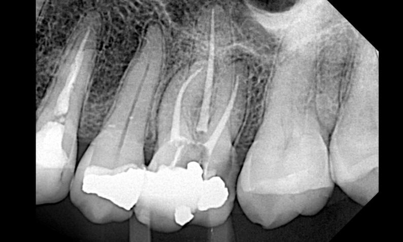
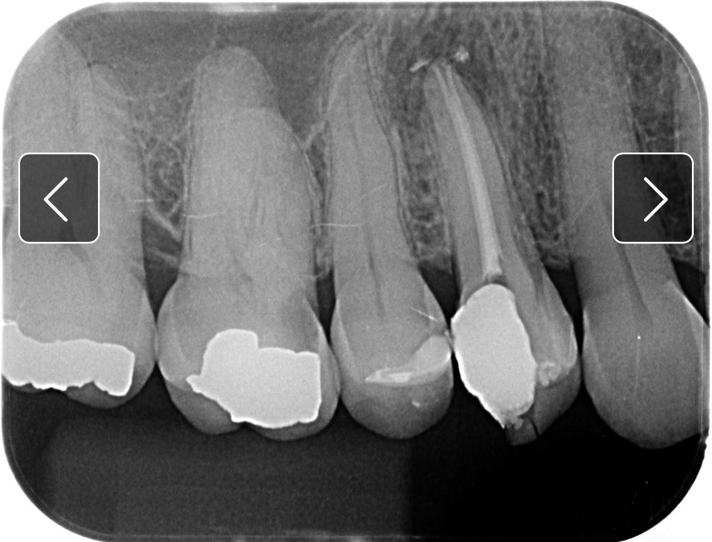
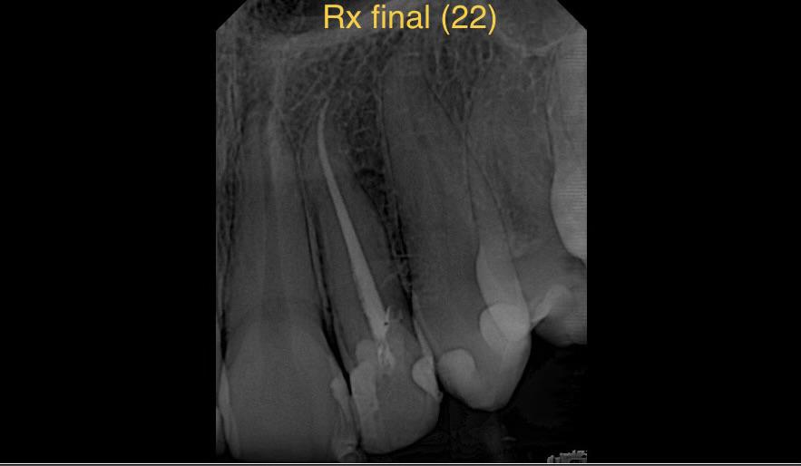
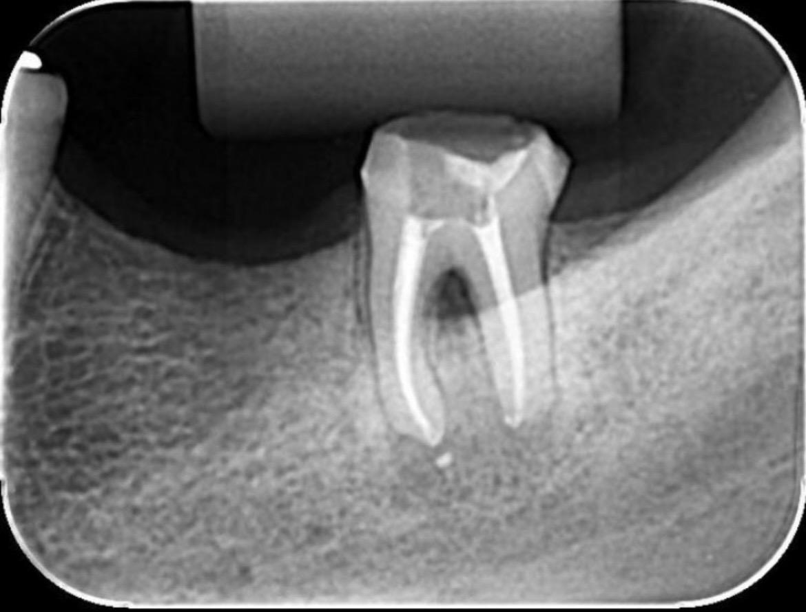

Resumo profissional
Cirurgião-dentista especialista em endodontia há 16 anos, dedicado ao tratamento de canal com técnica, precisão e atendimento humanizado. Proprietário de clínica odontológica própria desde 2008 e atualmente disponível para atuar como endodontista parceiro em clínicas na região de Sete Lagoas/MG, com horários abertos durante a semana.
Experiência profissional
Endodontista parceiro — Clínicas odontológicas
Atendimento de endodontia (tratamento de canal, retratamento e urgências) em parceria com
clínicas, integrando o corpo clínico com agenda flexível.
Proprietário e endodontista — Líder Odontologia
Fundação e condução de clínica odontológica própria, com foco em endodontia e cuidado
centrado no paciente.
Especialidade & competências
Tratamento de canal
Retratamento endodôntico
Urgências em endodontia
Diagnóstico por imagem
Atendimento humanizado
Convênios atendidos
Unimed
Amil
SulAmérica
Particular
Casos clínicos realizados




Imagens clínicas reais, sem identificação de pacientes.